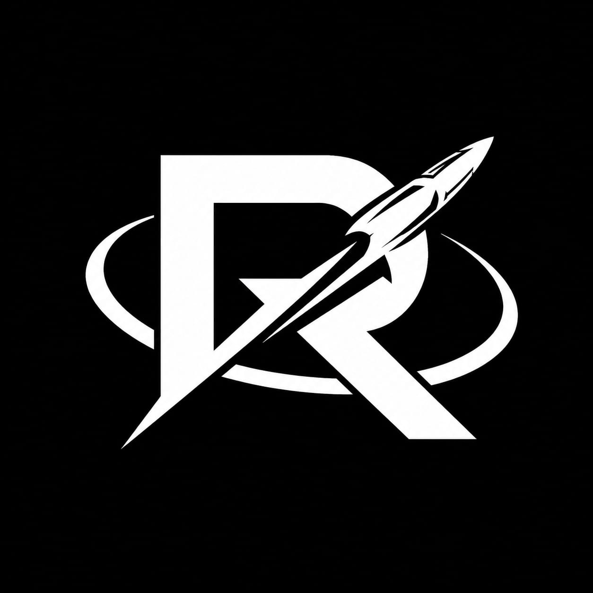

> AEROSPACE_ ROBOTICS_ HARDWARE_
Primary research and development laboratory. Focused on high-speed hardware design, custom PCB integration, and experimental mechanics.
[ DIRECTIVE_01 ] : ROVER_SYSTEMS
STATUS: ACTIVE
Development of autonomous traversal mechanics, structural modeling, and sensor integration arrays.
[ DIRECTIVE_02 ] : AEROSPACE_CONTROL
STATUS: CLASSIFIED
Flight control systems, EMI mitigation, and propulsion testing utilizing custom hardware architectures.